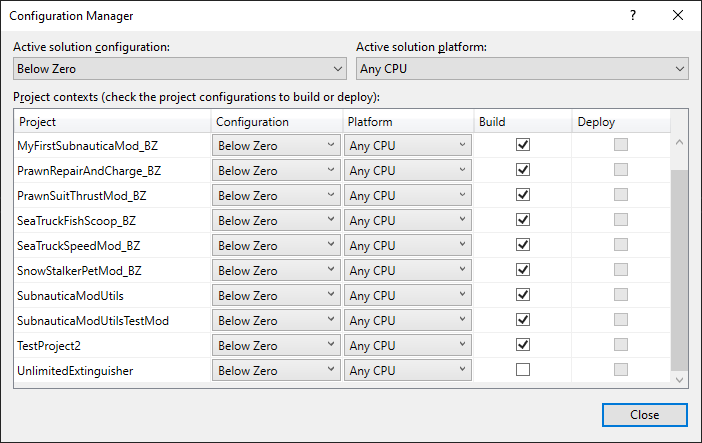
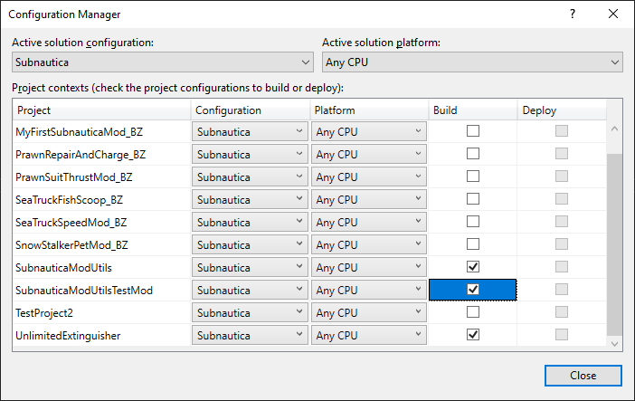

Compiling for both Subnautica and Below Zero
As the games are so similar in structure, especially with the latest game builds, it is often possible to build a mod that works with both games. As you might expect, there are difference that you may have to account for in your code, but there are ways to achieve this in Visual Studio.
The steps to do this are as follows.
Create configurations
First up, we'll create some configurations to allow us to do different things with different games:
- In Visual Studio, click the
Buildmenu and selectConfiguration Manager - In
Active solution configurationclick the drop down and selectNew... - Give it a name,
Subnautica, copy settings fromReleaseand clickOK - Repeat for a new configuration called
SubnauticaZero - While
SubnauticaZerois selected as theActive solution configuration, go down the list and tickBuildnext to the mods relevant to that game - Now select
Subnauticaand do the same
As you can see from the screenshots below, I have a bunch of mods that will work with Below Zero, one that'll work with Subnautica, and one that will work for both:


Okay, we're getting somewhere!
For each of you projects, right click, select Properties and go into the Build item. If you then select one of your game configurations from the Configuration drop down, you can set a series of constant values that will be used to explicitly ring fence code intended for that game only.
So pick Below Zero from the drop down, and enter SUBNAUTICAZERO in the Conditional compilation symbols box. Change the drop down to Subnautica and enter SUBNAUTICA in the box.
Dynamically load references
The game DLLs are in different locations for each game, so we must tell Visual Studio where to look for both sets of references. This is actually easy to do, but requires manual editing of Visual Studio project files.
- Locate the ".proj" file for your mod project.
- Right click and open the file in Notepad.
You'll see a load of XML nodes called "Reference". What you want to do here is to amend the "hard coded" DLL location reference, and use the configurations that we defined earlier to make them dynamic:
<ItemGroup>
<Reference Include="0Harmony">
<HintPath>E:\Games\Steam\steamapps\common\$(Configuration)\BepInEx\core\0Harmony.dll</HintPath>
</Reference>
<Reference Include="Assembly-CSharp-firstpass_publicized">
<HintPath>E:\Games\Steam\steamapps\common\$(Configuration)\$(Configuration)_Data\Managed\publicized_assemblies\Assembly-CSharp-firstpass_publicized.dll</HintPath>
</Reference>
</ItemGroup>
So, when we set the configuration to Subnautica, the project will look for references in:
E:\Games\Steam\steamapps\common\Subnautica\
and
E:\Games\Steam\steamapps\common\Subnautica\Subnautica_Data\
Writing game specific code
You can now ring fence code for compilation only when the target configuration is Below Zero or Subnautica using these if and endif directives, something like the following:
public class Class1
{
void Test()
{
#if SUBNAUTICA
Console.Write("This is for Subnautica!");
#endif
#if SUBNAUTICAZERO
Console.Write("This is for Below Zero!");
#endif
}
}
What's really cool here is that Visual Studio will only syntax highlight the relevant code when you select the corresponding configuration, so you can see exactly what you're going to get when the mod is compiled for that particular game.
Build events
Compiling your project produces an assembly in the default location within your project folder structure. Normally, this is within bin\Debug or bin\Release, depending on your compile options.
Build events allow us to a bit more with the compiled assembly, and associated files, pre or post build. A good use case here is for a post build activity to deploy your mod to the Subnautica game, so that you can test it. This avoids having to manually copy and paste DLL files each time you want to test.
Here's a really straight forward Post-build event script that will run immediately after a successful build:
mkdir "E:\Games\Steam\steamapps\common\$(ConfigurationName)\BepInEx\plugins\$(TargetName)"
xcopy /q/y/i "$(TargetPath)" "E:\Games\Steam\steamapps\common\$(ConfigurationName)\BepInEx\plugins\$(TargetName)" /E /H /C
So, you can now select your game configuration and right click and Build for each of the mods in your solution, automatically deploying them to the appropriate game location.